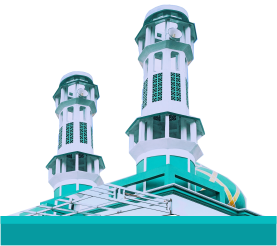
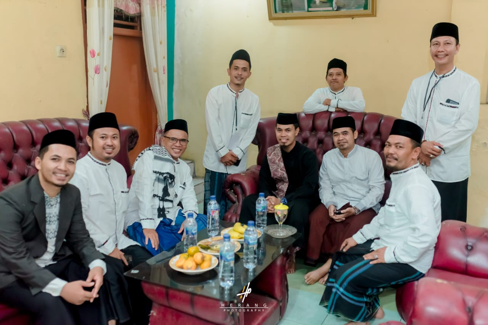
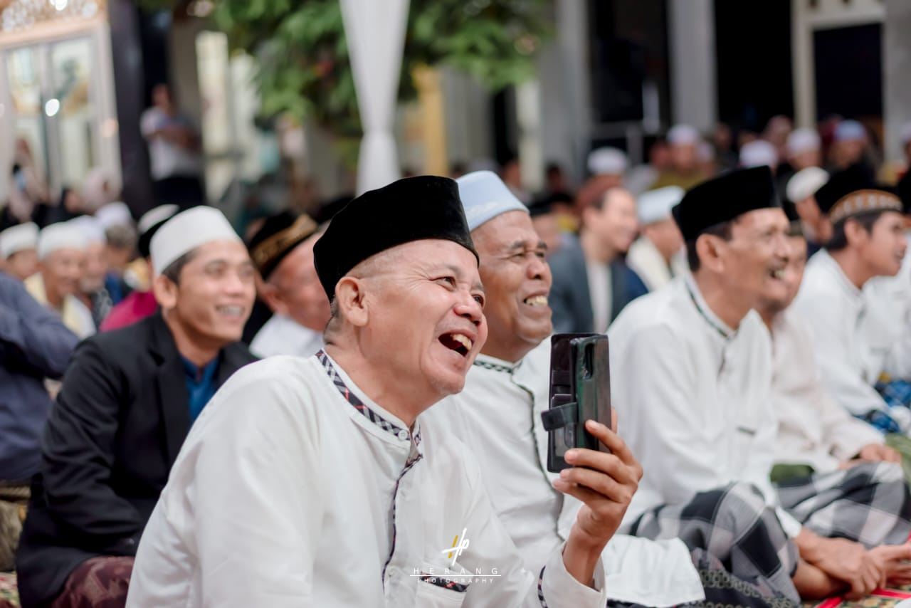
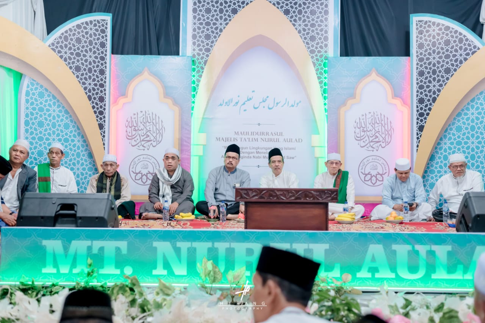

Media Informasi
Mushola Nurul Aulad
Sekretariat :
Kp. Lembur RT 001/008
Desa Bojongkulur Kec. Gunung Putri Kab. Bogor 16969
Telp. 085719714700 email. nurulauladmediacenter@gmail.com

Current time in Jakarta, Indonesia
MASIH TAHAP MAINTENANCE!
  
IMSAK
SHUBUH
DJUHUR
ASHAR
MAGHRIB
ISYA
04.15
04.35
12.15
15.30
18.18
19.20